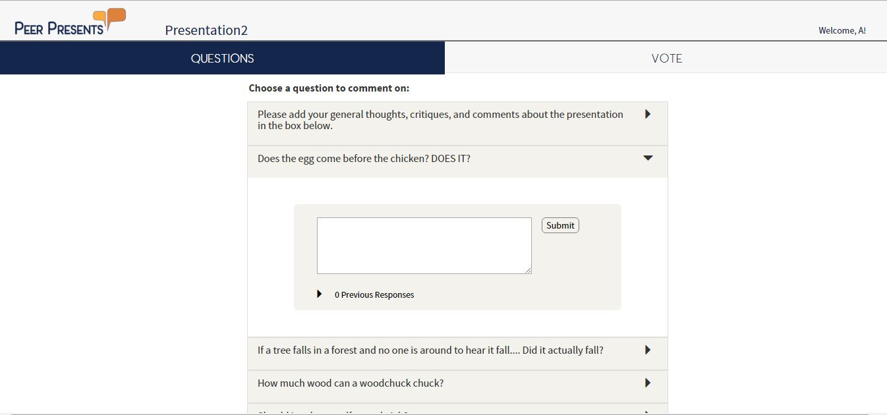
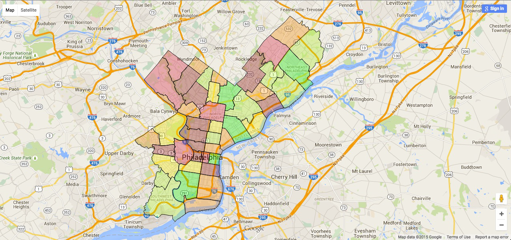
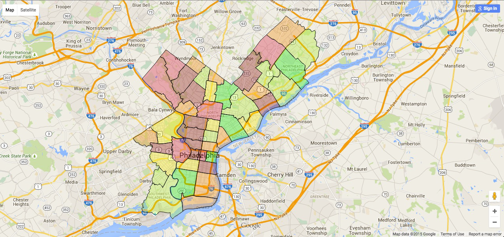
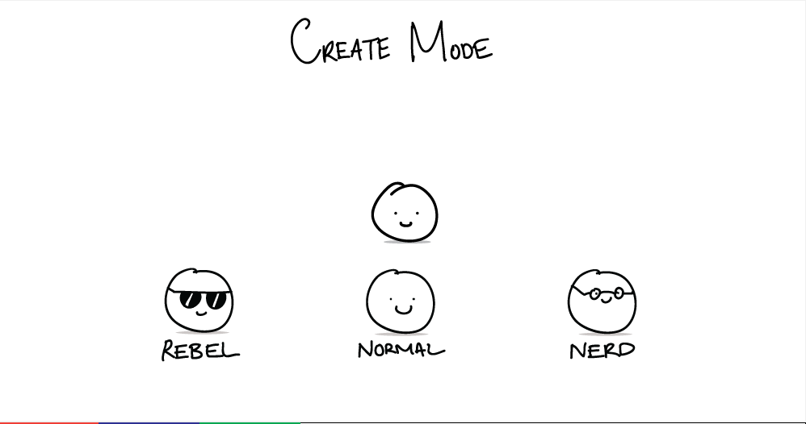
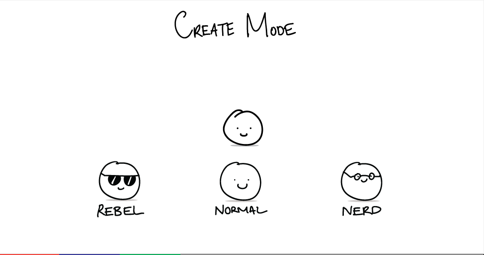

projects
stuff i made
today
Wiki-Gen
August 2015 - Present
Wiki-Gen is a Wikipedia Page Generator. A topic is searched on the webpage, and based on the search results, sentences are formed using Markov Chains and a database of parsed words from Wikipedia pages. The end result is a webpage that contains text that is randomly generated based on the language of Wikipedia. See the Github page to follow our process.
So, what exactly did we do here? We (as in Kevin and I) decided to make use of the last half of our summer. Kevin proposed the idea of working on an interesting project to me sometime, and I was quite eager to work on anything web related (I had just spent the summer learning about the basics of HTML & CSS & JS).
Kevin's contributions were mostly backend, while I helped with the frontend. We were able to download approximately 8 GBs of Wikipedia text data, and preprocess the information by parsing the collected text into a four-gram table using a combination of Python 2.7, as well as SQLite (sqlite3). Therefore, at the end of the preprocessing, we held an 8 GB database of words in Wikipedia and their statistically probable follow-up words.
Afterwards, it was a matter of setting up a way to query the results when an input was given, and setting up the web application to host this service on. We used Flask as our web framework to easily interface with Python. Eventually, we created an interface that was direct in its features, as well as elegantly flat.
Where are we now? Welp, sadly this project is still on-going. But when I say on-going, I simply mean it's on hold. Kevin and I never fully finished the project, and although it can fully function and output a generated Wikipedia article, it can always be better. A big factor of not finishing is that our query process needs to improve. As of right now, some phrases simply won't generate any text due to the fact that our database doesn't know what to do with the data. So you can't exactly just type anything you wanted and get a result at the end. You may have to prompt the data to flow some more, or you may have to simply search for something more common. A part of this may be the fact that we have a small database (compared to the whole Wikipedia DB), but another part could simply be us not being creative enough to query results. We're working on making this experience very simple and functional for users, and that is why this project is still marked under the 'today' section.
Quad Academy
May 2015 - Present
Quad Academy is a subdivision of CMU's Robotics Quadrotor
Club. The subdivision is a project itself, which aims to help
spread educational quadrotor kits to high schools around
the Pittsburgh area. These kits would help students learn
basic programming, promote hobbyism, and introduce concepts of hardware and electrical work. Our group mainly consists of Kevin Apolo (5th year Mechanical Engineer at CMU) and me, but we often enlisted the help of people from CMU's Robotics Club.
Aug 2015 - May 2016
For the past school year (2015-2016), Quad Academy has been teaming up with a new student organization at Carnegie Mellon, Project Ignite, in order to prototype our kit and curriculum. In the fall, we mostly planned our curriculum and designed our kit for the upcoming spring semester. When spring rolled around, 6 students from local Pittsburgh high schools joined our Project Ignite group, and were mentored weekly on topics relating to Quadrotors. We covered the basics of what a quadrotor was (how it's made, what parts are needed, what does each part do?, etc.), what physics went behind them (roll, pitch, yaw, etc.), and what functions they could perform for them to be relevant. As the weeks progressed, we introduced programming (Python), Arduinos, and Raspberry Pi's to them; we taught them how to solder and how basic electrical engineering worked; and most importantly we let them apply all of these learnings to physical Quadrotors by allowing them to build their own from scratch(ish).
The program lasted for 10 weeks, meaning we only had 10 workshop sessions (each one lasted 4 hours) to jam a bunch of information into these students. Luckily, Kevin and I had really bright students in our group, and alot of times the slowed progress of our project was on us, the mentors, or typical frustrations of engineering (i.e. not having the right tools, debugging slowly, etc.). After the initial weeks of lecturing, our students started to immediately construct their own quadrotors (in pairs of 2). We had a prototype ready which the students essentially followed (due to the fact that we don't have the resources of time and money to allow them to freely make their own), and each week they came in to construct more of the quadrotor by either assembling the frame/components or soldering some electrical work to wire the components properly.
Towards the last few sessions of Project Ignite, we were able to focus on making the quadrotors fly. This part took the most time, and was definitely the most frustrating. The process involved callibrating the quads to a stable state, and then tuning/trimming the settings of the controller to make for stable flight. At the very last session, we were able to get them to fly! That is... after breaking the frame of one pretty badly, and accidentally super glue-ing another's propeller onto the motor... (meaning we messed up ALOT before we succeeded). Below you'll find a video of some sample snippets of our successful flights, but look even further down to see our awesome students learning and engineering better than me.


Lemme add on a personal note: when I say that these students were "bright," I most definitely mean it. It was a pleasure to teach them because quite frankly, we didn't really have that much trouble getting them to understand what we were talking about. But even more important than that, was that they made every Sunday afternoon fun. They're ideal students who are not only smart, but also sociable and remarkable individuals. I found myself laughing more than being serious. I found myself enjoying the company of these high school students and their bickering natures. Some of them would go to the blackboard on their downtime and make up chemistry problems "for fun," others would try and impersonate different accents (not very well I must add), and some would simply sit there and laugh at all of the silliness that was happening around. Alot of times, I couldn't help them with a question they had (I'm still very much learning about Quadrotors myself), but it was still a genuine pleasure to try and guide them into the STEM field / try to be their friend (although I guess I'm getting old for that). Anyways, personal note over... I'll leave you with a childish (yet Picasso-like) drawing that one of the students made. Just because it's awesome (like them :D).
2015 - 2016
Peer Presents
September 2015 - May 2016
PeerPresents is an online peer feedback system to improve the feedback process for in-class presentations. This project is an ongoing research project under Carnegie Mellon's Human Computer Interaction Institute that aims to find the most effective feedback tool for students to utilize in classroom settings. The actual web application is implemented in Node.JS (Jade template and Express framework), Socket.IO, and MongoDB.
I joined the research lab (Protolab) in Fall 2015 as a web developer. The majority of the code base was already implemented from the summer, so I mostly joined to help debug and implement new changes to the system. I worked closely with another undergraduate student who served as the team's designer, a PhD student who served as a developer, and our PhD lead over the course of the Fall semester. Our team improved the UI/UX of the overall system, fixed remaining bugs from the summer, and then implemented an A/B test that was deployed for testing towards the end of the semester.
(1) Improving UI/UX:
Starting off with this project, the UI of the application was fairly simple. The functionality and backend of the system was setup (although still unstable), but the UI was very plain.
 Our designer came up with a new design for the whole system: a new logo, new color scheme, and tweaks to the layout. At our lab's weekly SCRUM meetings, members of our team as well as other HCI members in the lab would participate in giving feedback to the new designs. As we finalized the look of the system, we implemented the new interface and design. I also fixed several layout issues that occurred due to changes in the size of the window.
The final implementation of the design changed around the logo, button design and placement, color scheme, etc.
Our designer came up with a new design for the whole system: a new logo, new color scheme, and tweaks to the layout. At our lab's weekly SCRUM meetings, members of our team as well as other HCI members in the lab would participate in giving feedback to the new designs. As we finalized the look of the system, we implemented the new interface and design. I also fixed several layout issues that occurred due to changes in the size of the window.
The final implementation of the design changed around the logo, button design and placement, color scheme, etc.
(2) Fixing bugs
Our web application needed to be fully functional for our classroom deployments. We planned to deploy to a particular class and have them use PeerPresents versus handwritten notecards for feedback. Our initial bug fixes involved small changes (i.e. UX fixes), but as we came closer to the deadline, our bug crawl involved testing for traffic intensity and stability of the system. Unfortunately, we found a particular bug that was rather nasty during our actual deployment. Finding that bug was a challenge since it didn't always occur when we played around with the system. We ended up finding issues with the way the user object was being passed, and decided to fix it by adding a conditional that checked for these seemingly random corruptions of our user objects.
(3) Implementing A/B test
Towards the latter part of the semester, our team wanted to test new features to further the study of optimizing our tool. Brainstorming for this new topic was a process that took a few weeks, but in the end, we decided to test the impact of the tool's interface on the user's actions. In particular, we wanted to know whether a split version of an interface versus a combined version of an interface led to people commenting / voting more. For our system, people can comment their own thoughts. In addition, they can look at other feedback given from their peers and vote on those feedback. We decided to implement an AB-test where version A supported a split interface and version B supported a combined view. We hypothesized that the split display would lead to more commenting and less voting since switching between the tabs may be a deterring factor, and that the combined display would lead to less and more conservative commenting from users, yet more votes for other comments.
Our team brainstormed the design of the whole test and the interface of the new system in the first few weeks. Afterwards, it was a matter of implementing the two versions in our existing code-base. We randomly assigned the students to either group A or group B. Their account names were tracked in our database, in order to figure out the switching of the groups. So for the first 2 weeks students in group A witnessed a split view of the interface, while the rest of the students spent it in group B with the combined views. After 2 weeks, we simply switched the students to the opposite group.
Version A (Split view):


Version B (Combined view):

In spring of 2016, my role in Peer Presents involved less development, and more analysis of our datasets. After deploying to two classrooms in the fall semester, our team gathered over 6000 real-time feedback comments from actual students in a classroom setting. I digitized a lot of the non-PeerPresents feedback comments that were provided by students on notecards. This step was rather long and tedious, but after a lot of the data was sorted and imported into excel sheets, our analysis of the actual data started kicking in.
I, along with our PhD lead and our other PhD developer, worked on coding the feedback comments that we received. This 'coding' meant categorizing each comment by a student into respective labels. These labels help provide more context to whether or not Peer Presents is a more/less effective system for feedback commenting. Although I fixed bugs here and there, the majority of my work in the second semester involved reading notecards and excel sheets to try and clean the process of analyzing the data.
Philly Home Finder
September 4 - September 6, 2015
Philly Home Finder helps users find suitable neighborhoods that match their preferences in the city of Philadelphia. For Pennapps Fall 2015, our group created a web application that allows users to set certain parameters based on what they would like to see in their neighborhood (i.e. better education, parks, etc.). The application then takes those parameters and synthesizes them with data from a large collection of civil data for Philadelphia. The application would then map and color code suitable neighborhoods (based on zip-codes) for an easy user experience. We used Flask to develope the framework, as well as Microsoft Azure's DocumentDB for creating the database. Towards the end we also messed around with Google Maps API in order to display color-coded zipcodes around Philadelphia. Check out our source code
here.
Unfortunately, this project was made for a 36-hour hackathon. What this means is that our documentation and the overall sustainability for this project isn't very high. We turned to resources that were temporarily free (i.e. Microsoft Azure) in order to deploy our solution, but that means that after about a week/month, our resources ran out of their "free trial" statuses, and we're now left with not-so-free and not-so-working projects. If you wanted to try and build the solution with Microsoft VS yourself, it'd actually throw an error due to the inactive state of our DB. So a demo of our project is a bit difficult to get to, but if you do REALLY want to see it, please just shoot me an email and I can figure out some of the details to fixing up a demo.
I did, however, really want to discuss what I personally did for this project. This past school year (ever since Summer of last year), I wanted to learn more about UI/UX/Design, as well as web development in general. This was the first hackathon that I attended where I applied some of the self-taught concepts I learned over the summer to an actual tangible project. My work in Philly Home Finder was setting up the server and framework of our web application, as well as designing the UI/UX. My teammates helped set up backend database processing, and together we joined the frontend and backend aspects of the project to create a fully functioning web application. (Disclosure about the images below: I couldn't reproduce the exact way the application looked during the hackathon, so the third image of Philadelphia below is actually me messing around on Adobe Illustrator, making it look similar to what it was like that weekend. It is not the real representation produced with Google Maps API when we coded it.)

 

To be completely honest, looking back at this project I'm not the most proud of the design work that I did. I was able to learn alot more about design and UX work in my research lab sophomore year, and quite frankly I can see alot of failures on my part for Philly Home Finder. Take a look at the middle picture above and tell me that doesn't make you cringe a little. The sliders, although they looked minimalistic and clean, are not very intuitive. Which way is higher? Okay, typically it's to the right, but how do you know for sure that all users will interpret it that way? I think alot of this may also be due to the fact that I wasn't very good at web development in those days. I did a lot of janking around with my code to hard code some UI. But, again after a year of being more experienced and learning from my naive self this past year, I'd say I can definitely do better.
2014 - 2015

Snaps vs Humanity
February 6 - 8, 2015
"Snaps vs Humanity" combines the popular social application, Snapchat, and the popular card game, Cards Against Humanity. For CMU's TartanHacks 2015, our team built a platform for this mobile game to be easily played by anyone who had access to Snapchat. The game was hosted through a server over the course of TartanHacks, however, since the 24-hour hackathon is over, the server is also down. But if you want to view our work, visit our repository on Github [note: our commit messages aren't very professional since we worked in the same room during this project]. Also, you can download our project's PowerPoint and read the comments here.
The game largely consisted of interacting between our web server and Snapchat's server using a third-party Snapchat API. This API allowed us to connect to an account, send snaps, receive snaps, and therefore also transfer snaps (by saving snaps and sending them to respective parties). We had a central account that sent invites to people's accounts, waited for responses from every account, and used computer vision to analyze the snaps sent by users. OpenCV was used to analyze whether or not a user replied with an acceptance of the game ("##CONFIRM"). Once all players have accepted, our server randomly selects a player from the list to be the judge. The judge receives a snapchat from our central account that tells it to chill out until further instructions, while all other players receive a snap of a black card (prompt card). The users who received prompt cards are then to snap back a response to our central account. The central account then randomly forwards the images to the judge, and based on the judge's answer (which he/she snaps back to our central account), the winning player is notified. The next round starts and another judge is picked.
We strictly worked with Python in this project: OpenCV for computer vision, Flask for the web server, and the Snapchat API written for Python. Since I was very new to programming at this time, the majority of my job dealt with the UI and design of the project. I worked with another member of our team to implement the web server for the majority of the hackathon, while two others worked on implementing the CV and the back-end processing for the sever.

Piairno
January 11, 2015 - January 17, 2015
The Piairno is a wearable set of gloves that produces musical tones when played. With the aid of flex sensors and Arduino Unos, the concept of an "Air Piano" came to life during Carnegie Mellon University's Build 18 Week 2015 (a week long hackathon for engineers at CMU). A link to the project's wiki page can be found here.
In order to make the Piairno work, we used native libraries of the Arduino Unos to produce sounds that matched Piano notes. We matched the tone() command at various frequencies in order to produce the seven notes. Once we had the notes ready, we looked into the flex sensors and their functionality. Accelerometers and gyroscopes were also looked into, but were not implemented in time for the hackathon. For the flex sensors, we set a certain threshold in the middle for it to activate a respective tone. Once all the sensors were hooked up and soldered correctly, we sewed the sensors onto gloves. Since the arduinos needed to be present for the processing of tones, we also sewed the Arduino Unos to each respective glove.
The Piairno was my first hackathon project. It consisted of both hardware and software aspects that are pretty basic. At the time, however, I never really dealt with a project like this. I didn't know how to google effectively, nor did I know how to go through the web to find what I needed to make my project work. The content that I read online didn't exactly make sense to me, and electrical and computer engineering just didn't click completely with me. As I reflect on my experience through this hackathon, I'd have to say I struggled a lot. Today, I'm pretty confident that if I worked on the Piairno, I could make it in a few hours. Back then, however, I (along with my teammates who were all in similar boats) was certainly getting used to "engineering." This project may not have been very grand in the overall scheme of it, but it certainly helped set my tracks for future passions in engineering and hacking.
Ezzy World
November - December 2014
Ezzy World is a simple life-simulating game created with Python's TKinter and Adobe Illustrator. The project was created for Carnegie Mellon University's Fundamentals of Programming course (15-112). Project source code can be found here.
Ezzy World isn't that technically challenging. However, it is a project that I created from scratch in my early stages of learning how to program. All of the animations you see are drawn using Adobe Illustrator and a Bamboo tablet. The motions of the animations are created by switching two files back and forth to create movement within the game.
The project uses Object Oriented Programming in Python in order to keep track of 3 main classes:
(1) The Tkinter application that runs the game and the overall logic of the game [for example: the player's money, a list of instances of Ezzies, etc.],
(2) Furniture [each furniture object kept track of its own coordinates],
(3) Ezzies [which tracked coordinates, health statuses, name, etc.]
In order to set up autonomy with the Ezzies, the Python Random library was heavily used. A lot of the logic that went behind an Ezzy moving on its own, or performing actions on its own came from a simple "random.randint(low, high)" command. The program would check every few seconds or so whether or not the returned random value from random.randint equaled 0. Meaning if random.randint(0, 20) was used, there was a 1 out of 20 chance that an action would be "autonomously" done. This randomization came into play in the movement of Ezzies, whether or not an Ezzy completed an action with a furniture object in the room, and even in the "Get Twerk" mini-game where randomly generated strings were produced.
Other features of Ezzy World includes loading/saving, Ezzies aging over time, Ezzies dying if not treated properly, Ezzies changing animations if dissatisfied, etc. The project was created over a month's span, and was a great experience in terms of learning how to design/implement a full-stack project. Ezzy World is now on Github if you wish to play around with it, or if you want to contribute to the game and add on.


 
